O administrador conduz o torneio do começo ao fim: abre o torneio, controla o relógio, aprova pagamentos, paga os prêmios e encerra o fechamento. Tudo é feito pela área Controle (/controle) e atualiza em tempo real o painel da TV e o celular dos jogadores.
As imagens deste manual usam um torneio de exemplo com nomes e valores fictícios.
Cargo
Validade
O que pode fazer
Administrador
Fixo
Tudo, inclusive cargos, torneios externos, códigos de senha e histórico
Dealer
Por torneio
Relógio, jogadores e eliminações
Financeiro
Por torneio
Lançamentos, aprovações e fechamento
Dealer e Financeiro ganham desconto no torneio em que atuam. O administrador não tem desconto, a menos que também tenha um desses cargos naquele torneio.
Acesso
Entre em /login com e-mail e senha; quem é da equipe vai direto para /controle.
Abra /login e informe e-mail e senha.
Esqueceu a senha? Peça a outro administrador um código de redefinição (veja Equipe e cargos) e use-o em /redefinir-senha.
Pessoa nova na equipe: ela cria a conta em /cadastro; depois um administrador define o cargo dela.
Use Ver como no menu para conferir a tela de um jogador ou de outro cargo; Sair da visualização volta ao normal.
Na TV da sala, abra /painel (não precisa de login).
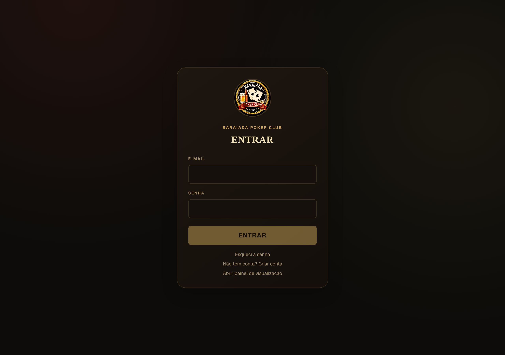
Tela de login
Funcionalidades passo a passo
Um torneio segue sempre esta ordem: abrir, conduzir, aprovar pagamentos, encerrar e fechar.
1. Abrir um novo torneio (/controle)
Clique em Começar novo torneio.
Preencha Nome do torneio e escolha o Tipo: Freezeout, Reentrada limitada, Reentrada ilimitada, Progressive Knockout ou Satélite.
Monte a Estrutura de blinds: use Usar a do último torneio ou o Gerador; ajuste níveis (small blind, big blind, ante, minutos), insira intervalos e reordene com as setas.
Defina o Rake (percentual ou sem rake), os Lugares premiados e a Divisão da premiação — a soma precisa dar 100%.
Informe a Chave Pix para receber e confirme.
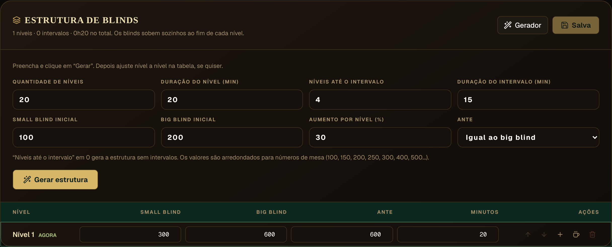
Estrutura de blinds com o gerador
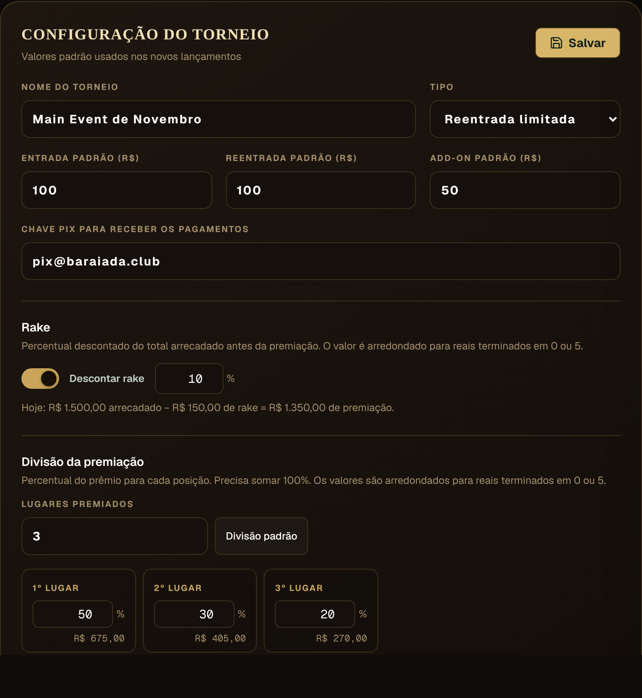
Configuração do torneio: rake, lugares premiados e divisão da premiação
2. Conduzir o torneio (/controle)
Relógio: inicie, pause e avance os níveis; o painel da TV acompanha.
Cadastro de player: cadastre quem não se inscreveu pelo celular (apelido, contato, mesa inicial).
Lançar valores: registre entrada, reentrada, add-on e pagamentos (Pix, Dinheiro, Cartão ou Cortesia). Errou? Use Estornar lançamento.
Eliminar: marque a eliminação do jogador; ela aparece no painel.
Divulgar no WhatsApp: gera a mensagem do torneio para compartilhar.
Entrada e reentrada valem até o fim do 1º intervalo; o add-on só durante o 1º intervalo e é a última compra.
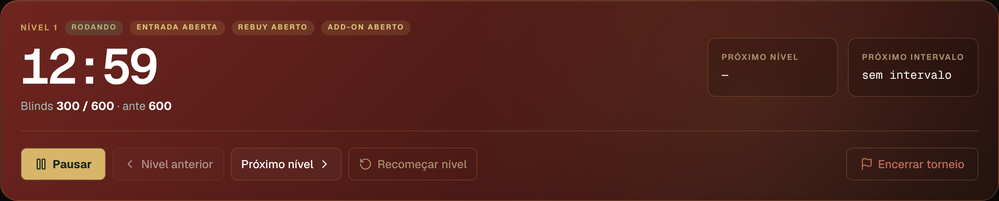
Relógio: Pausar, Nível anterior, Próximo nível, Recomeçar nível e Encerrar torneio
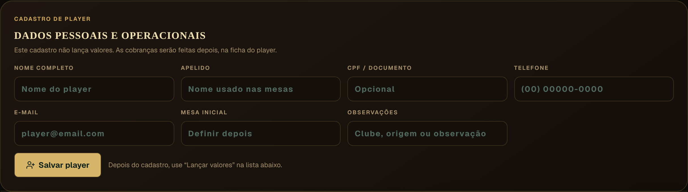
Cadastro de player
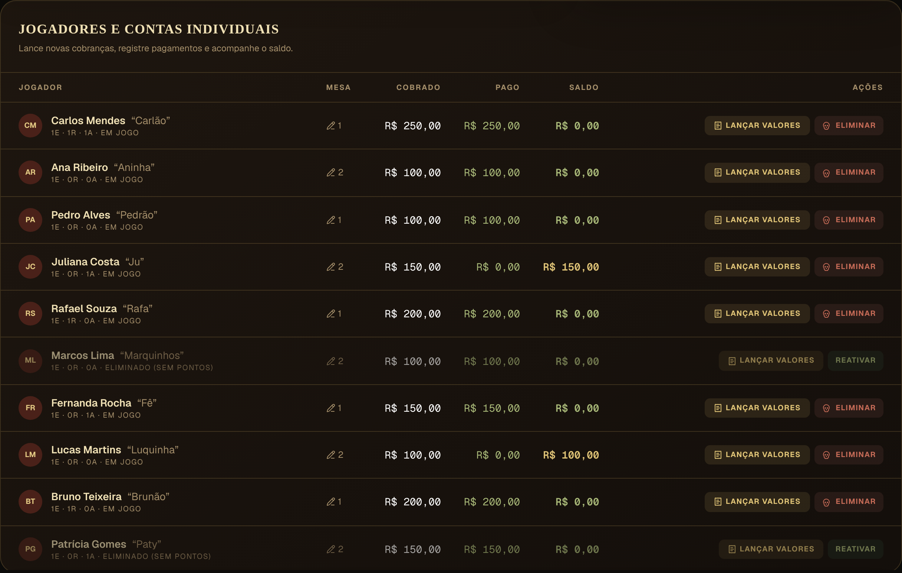
Jogadores e contas individuais: Lançar valores e Eliminar
3. Aprovar pedidos e pagamentos (/controle/solicitacoes)
Em Solicitações de jogadores, clique em Aprovar ou Recusar cada pedido de compra (inclusive entrada e reentrada dupla).
Em Pagamentos informados, abra Ver comprovante e clique em Confirmar pagamento ou Recusar cada "Já paguei".
O Histórico recente mostra as últimas decisões.
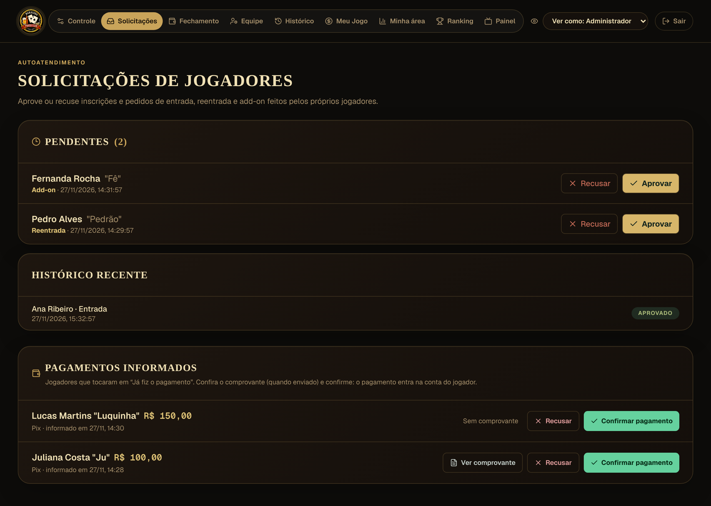
Solicitações pendentes e pagamentos informados
4. Encerrar o torneio (/controle)
Clique em Encerrar torneio e confirme a classificação final.
O sistema bloqueia o encerramento enquanto houver saldo em aberto ou "Já paguei" pendente.
Use Exportar fechamento (CSV) se quiser guardar a planilha.
5. Fechamento (/controle/fechamento)
Confira o resumo do dinheiro.
Em Pagamento dos prêmios, escolha a forma (Pix, Dinheiro ou Transferência), anexe o comprovante (opcional) e clique em Marcar como pago.
Envie a Foto do top 3.
Quando aparecer "Tudo pago e com foto", clique em Finalizar fechamento. Se faltar algo, a tela lista o que falta.
Use Compartilhar resultado para divulgar.
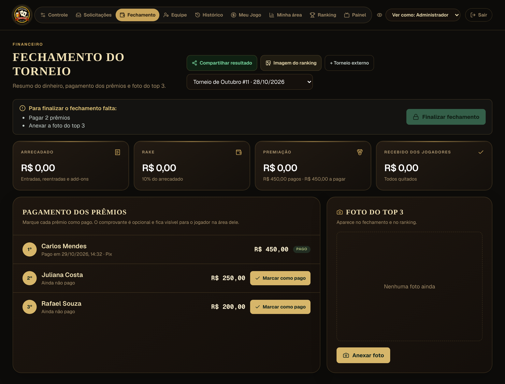
Fechamento: o que falta, pagamento dos prêmios e foto do top 3
Registre torneios jogados fora do sistema para que entrem no ranking: nome, data, total arrecadado, rake e a classificação (jogador e prêmio por posição, com Adicionar posição). Excluir remove o registro.
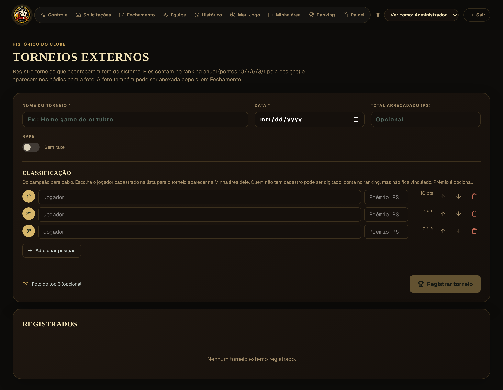
Cadastro de torneio externo
7. Equipe e cargos (/controle/admins)
Busque a pessoa em Pessoas cadastradas e defina o cargo: Administrador, ou Dealer / Financeiro no torneio atual.
Redefinição de senha: clique em Gerar código e envie com Enviar no WhatsApp.
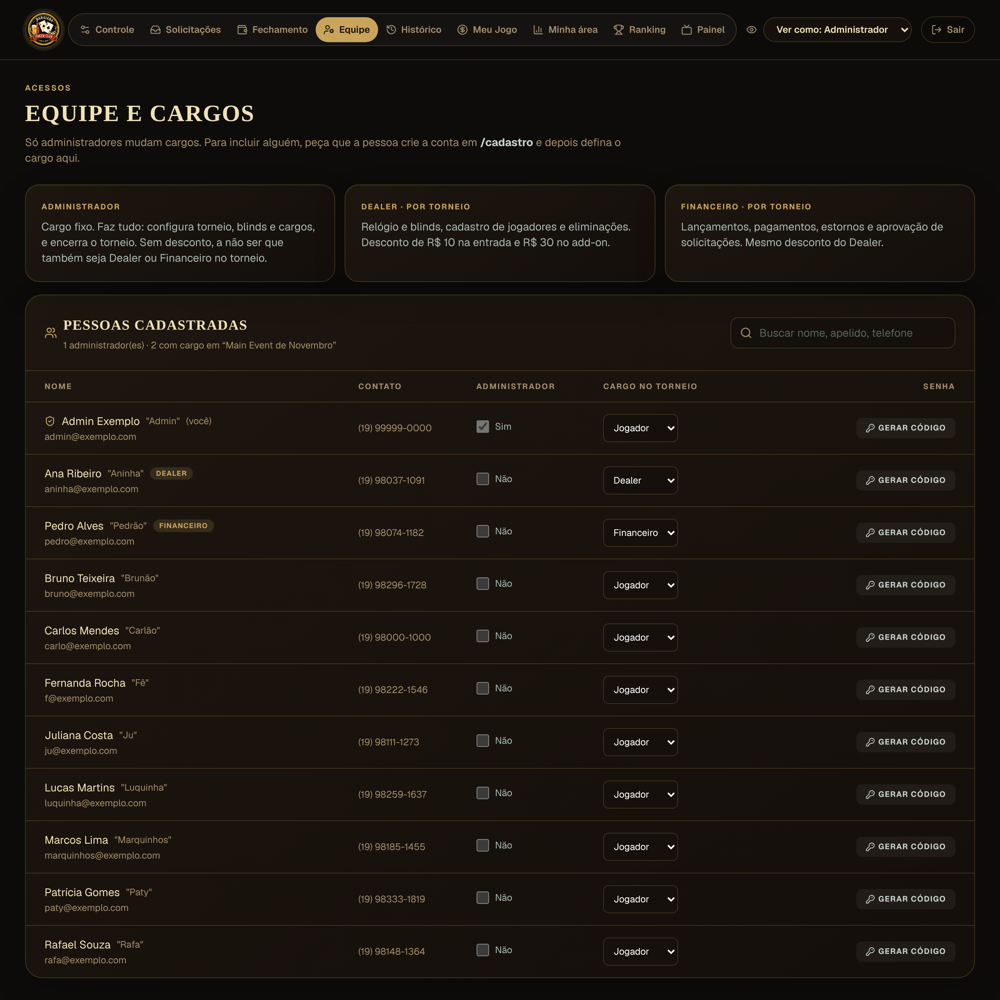
Equipe e cargos: cargo no torneio e Gerar código
8. Histórico de ações (/controle/historico)
Auditoria de tudo que foi feito. Filtre por torneio e tipo de ação, ou busque por pessoa, jogador ou valor.
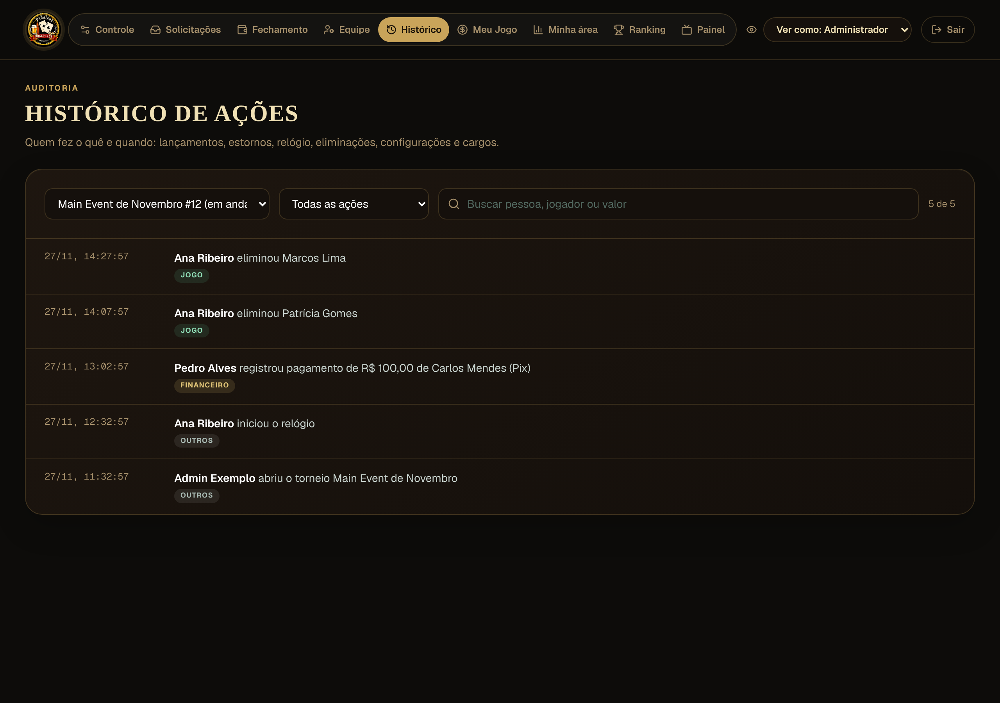
Histórico de ações com filtros
9. Jogar como administrador (/controle/meu-jogo)
Vincule seu cadastro de jogador para ver seus gastos, saldo a pagar e premiação, e use Reportar eliminação quando cair.
Boas práticas e dúvidas frequentes
Defina Dealer e Financeiro antes de abrir o torneio, para que o desconto seja aplicado.
Aprove os "Já paguei" ao longo do jogo, não só no fim; o encerramento fica travado enquanto houver pendências.
Corrija erros com estorno, nunca com lançamento negativo; tudo fica no histórico.
Valores de prêmio e rake são sempre múltiplos de R$ 5, e os prêmios exibidos já descontam o rake.
Não consigo encerrar o torneio. Ainda há saldo em aberto ou "Já paguei" pendente. Confira /controle/solicitacoes e o extrato de cada jogador.
O botão Finalizar fechamento não libera. Falta marcar algum prêmio como pago ou enviar a foto do top 3; a tela lista o que falta.
O jogador não consegue fazer add-on. O add-on só é aceito durante o 1º intervalo.
Alguém esqueceu a senha. Gere um código em /controle/admins e envie pelo WhatsApp.